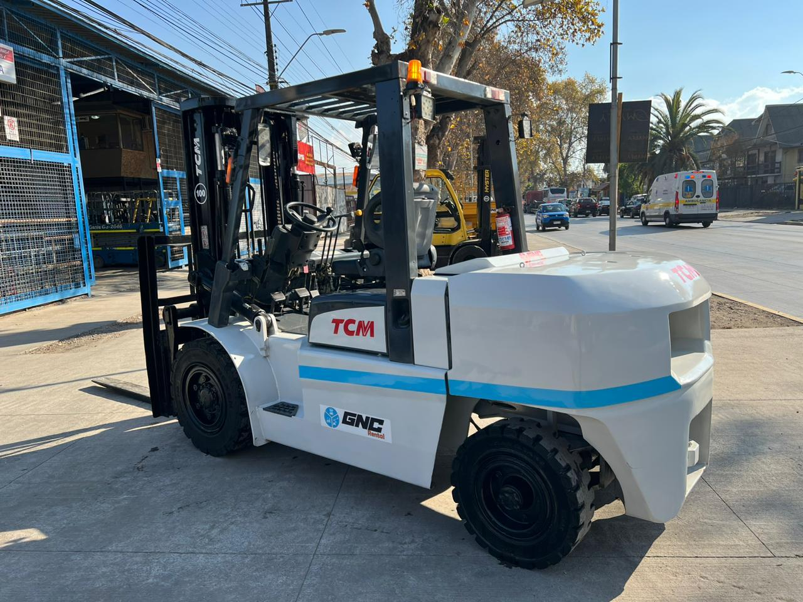
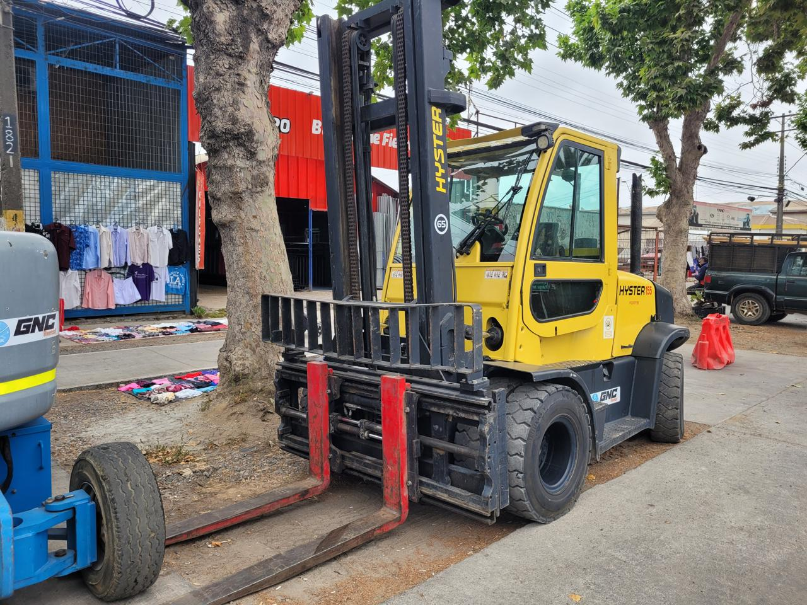
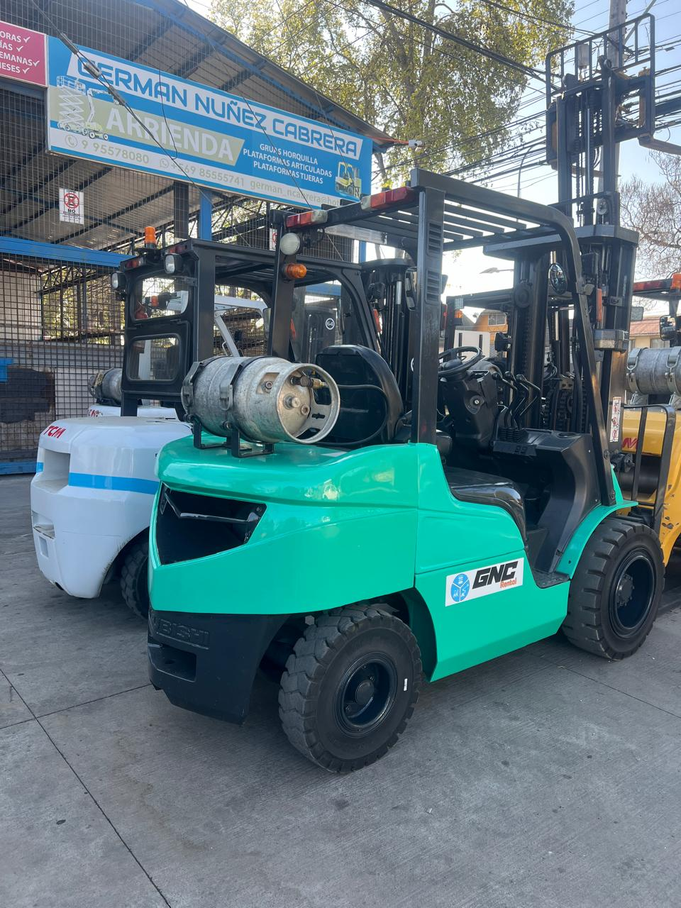
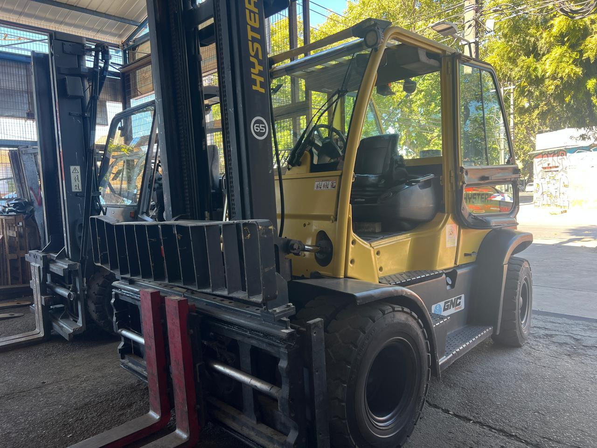
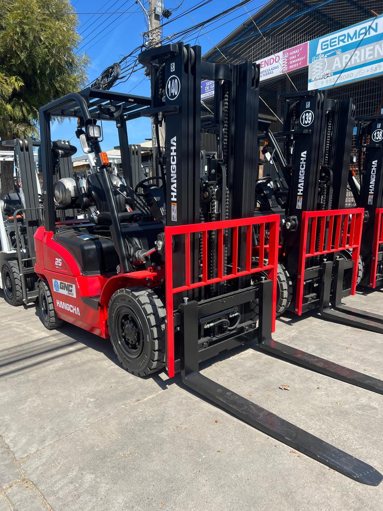
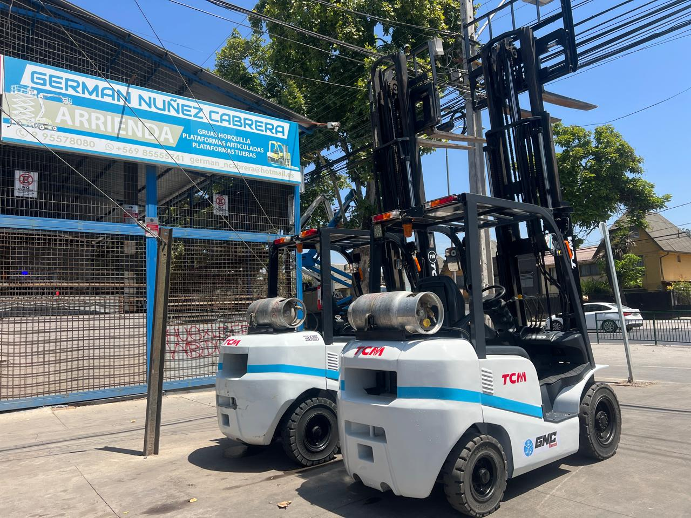
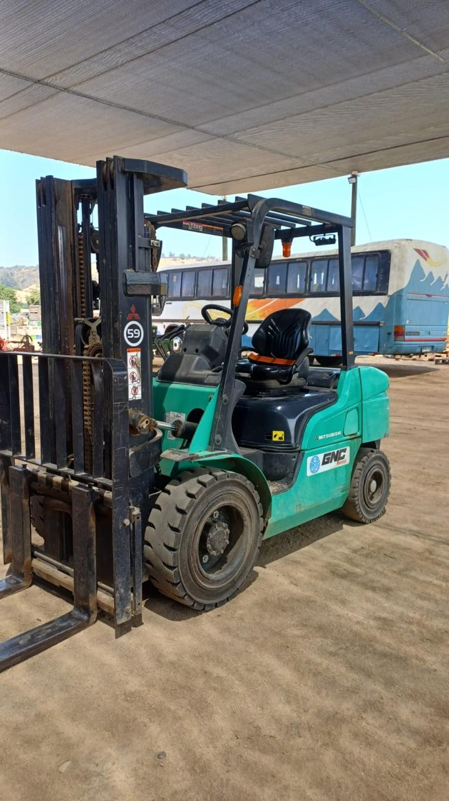

GRÚA HORQUILLA 2 A 6 TON
Potencia y versatilidad para carga
Equipos robustos y eficientes diseñados para el movimiento ágil de mercancías. Contamos con grúas horquillas en distintos tonelajes para adaptarnos a las necesidades de tu bodega, centro de distribución o patio de carga.
Especificaciones Técnicas Generales
- Marca: Multi-Marca
- Tipo de Motor: Gas (GLP) o Diésel
- Capacidad de Carga: Desde 2.5 hasta 6.0 Toneladas
- Tipo de Mástil: Triple con desplazador lateral
- Aplicación: Bodegas, logística, carga y descarga de camiones, movimiento de pallets.